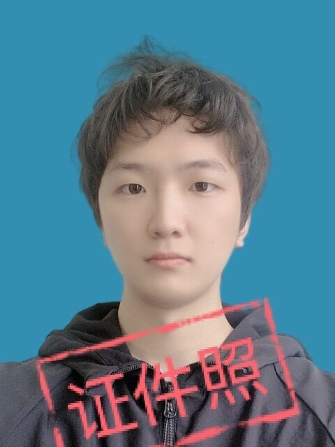
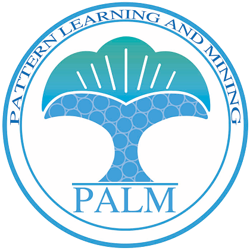

Hanshi Sun 孙寒石
I am currently a Research Scientist at
ByteDance Seed (Seattle),
where I work on Machine Learning Systems. Previously, I earned my M.S. in Electrical and Computer Engineering from
Carnegie Mellon University (CMU),
and my bachelor's degree from
 Southeast University (SEU).
Southeast University (SEU).
At CMU, I worked with Prof. Beidi Chen in the
 InfiniAI Lab
and collaborated with Prof. Andrea Zanette.
Also, I had a wonderful experience working with Prof. Xingyu Li at the
University of Alberta
and Prof. Yi Zhou in the
InfiniAI Lab
and collaborated with Prof. Andrea Zanette.
Also, I had a wonderful experience working with Prof. Xingyu Li at the
University of Alberta
and Prof. Yi Zhou in the
preminstrel [at] gmail [dot] com · hanshi.s [at] bytedance.com